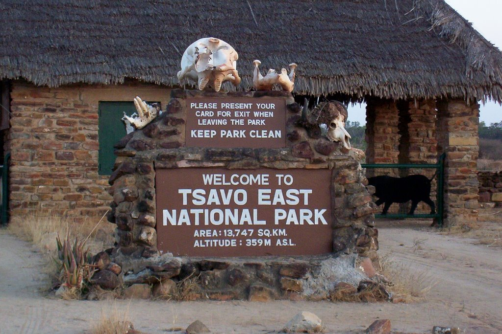
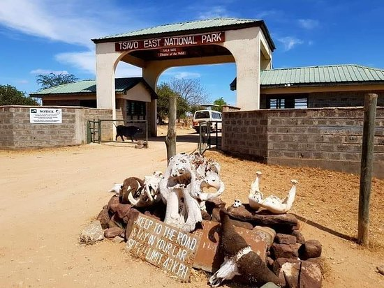
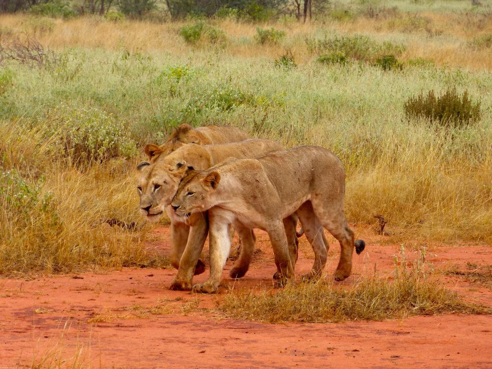
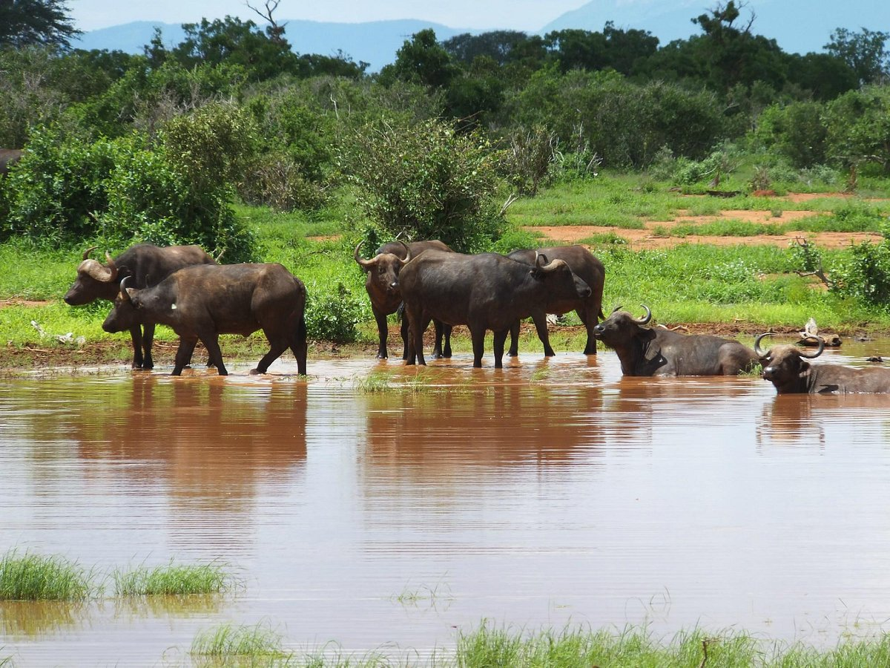
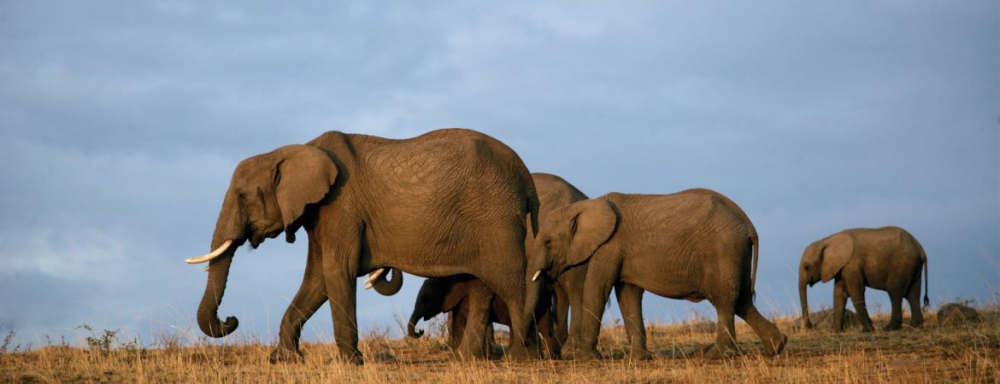
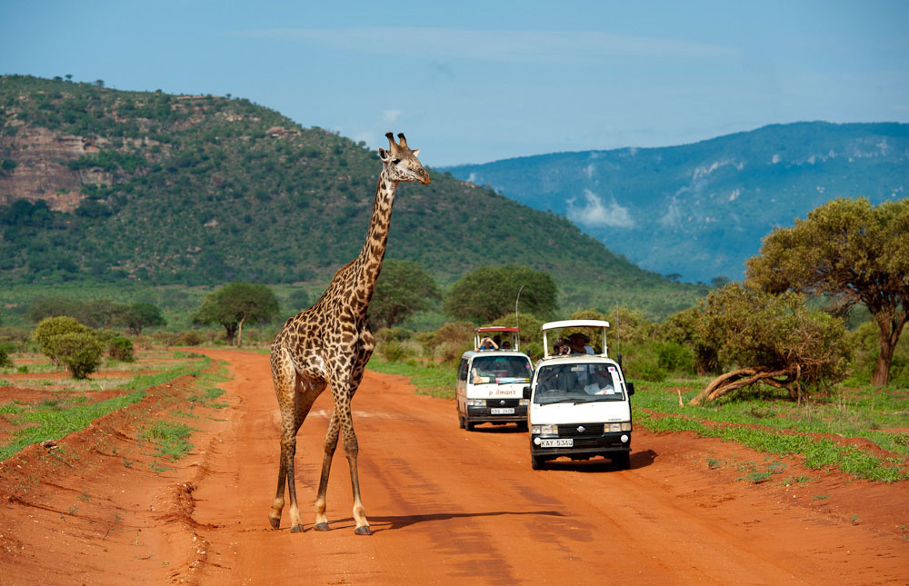
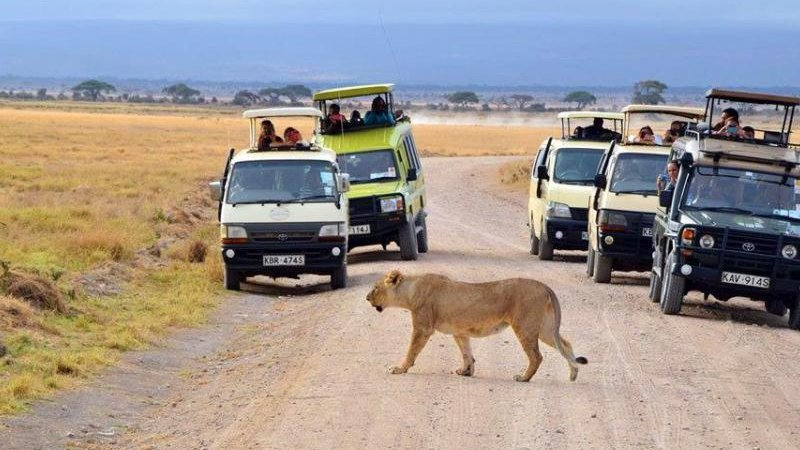

Tsavo National Park
Tsavo East National Park is a large wildlife reserve located in southeastern Kenya. It covers an area of over 13,000 square kilometers and is home to a diverse range of wildlife, including elephants, lions, leopards, giraffes, zebras, and many more. The park is known for its vast open savannah grasslands, volcanic hills, and the Galana River, which flows through the park and provides a habitat for crocodiles and hippos. Visitors can enjoy game drives, birdwatching, and guided walks, as well as visits to local communities and cultural sites. Tsavo East National Park is one of Kenya's oldest and largest national parks, and is a popular destination for both local and international tourists.
Pictorial Tour of Tsavo National Park

Tsavo East National Park's gate

Lions taking a stroll

Buffaloes in a river

Elephants in a herd

Tourists watching a Giraffe crossing the road

Tourists watching a Lion crossing the road